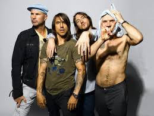

Red Hot Chili Peppers
Red Hot Chili Peppers" height="400px" width="400px">The Red Hot Chili Peppers, commonly abbreviated as RHCP, are an American rock band formed in Los Angeles in 1982, comprising vocalist Anthony Kiedis, bassist Flea, drummer Chad Smith, and guitarist John Frusciante.
Nirvana

Nirvana was an American rock band formed in Aberdeen, Washington, in 1987. Founded by lead singer and guitarist Kurt Cobain and bassist Krist Novoselic, the band went through a succession of drummers, most notably Chad Channing, before recruiting Dave Grohl in 1990
Slipknot

Slipknot is an American heavy metal band formed in Des Moines, Iowa, in 1995 by percussionist Shawn Crahan, former vocalist Anders Colsefni and bassist Paul Gray.